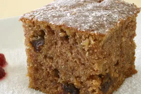

Coffee Cake

This a quick cake that 's hearty enough to serve for breakfast or brunch.
Ingredients:
- 1 ¼ cups boiling water
- 1 cup quick cooking oats
- ½ cup butter
- ¾ cup packed brown sugar
- ¾ cup white sugar
- 2 eggs
- 1 teaspoon vanilla extract
- 1 teaspoon baking soda
- ½ teaspoon salt
- 1 teaspoon ground cinnamon
- 1 ½ cups all-purpose flour
- ½ cup raisins
Steps:
- Pour the boiling water over the quick oats and let stand for 20 minutes.
- Preheat oven to 350 degrees F (175 degrees C). Lightly grease one 13x15 inch baking pan .
- Cream the shortening with the sugar until light. Beat in the eggs. Then add the oats and vanilla, mixing well.
- Combine the baking soda, salt , cinnamon and flour. Mix until combined. Add the raisins to the flour mixture and coat well.
- Add the raisin and flour mixture to the oatmeal mixture and stir to combine. Pour the batter into the prepared pan.
- Bake at 350 degrees F (175 degrees C) for 25 minutes or until a tester inserted near the center comes out clean. Dust with confectioners' sugar or serve with whipped topping, if desired.